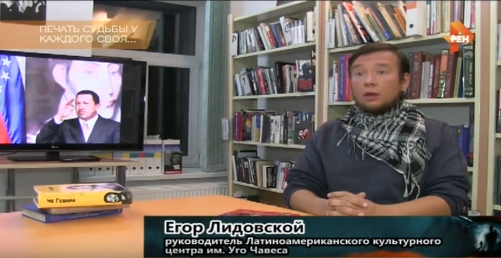

Видео стрингеров Санкт-Петербурга
Видеосъемка для телеканала РЕН ТВ, документальный фильм 'Печать судьбы у каждого своя... 7 самых странных смертей'
от 18 ноября 2016
Печать судьбы у каждого своя... 7 самых странных смертей
 На телеканале Рен ТВ в ноябре 2016 года вышел фильм о странных смертях знаменитых людей. Наши стрингеры приняли участие в репортажных съемках для этой киноленты. Было записано интервью с гражданкой Венесуэлы Карен Карпио, проживающей в Санкт Петербурге, а также с Егором Лидовским, руководителем латино-американского культурного центра имени Уго Чавеса. Эти видеосъемки использовались в сюжете о таинственной гибели от рака лидера Боливарианской республики.
Кроме этого, для сюжета о Викторе Цое стрингер встретился в на севере Санкт-Петербурга с отцом музыканта Робертом Цоем. Роберт Максимович в эксклюзивном интервью рассказал о увлечениях знаменитого музыканта. Также, для этого видеосюжета было записано интервью с первым директором группы "Кино" - Юрием Белишкиным.
Фильм "Печать судьбы у каждого своя... 7 самых странных смертей." Эфир от 18.11.2016
Видеосъемка для телеканала НТВ, третий видео сюжет о возвращении картин для программы "Чрезвычайное происшествие"
от 11 ноября 2016 года
Возвращение картин
История про возвращение картин известной питерской художнице Светлане Симоновой полностью была отснята стрингером в Санкт-Петербурге. Съемки нашего видеооператора - журналиста для программы телеканала НТВ помогли вернуть пропавшие полотна. Этот сюжет был использован в юбилейном выпуске Чрезвычайного происшествия, где Светлана поблагодарила за работу нашего сотрудника.
Сюжет для программы программы "Чрезвычайное происшествие" Возвращение в полдень. Эфир от 11.11.2016
Телеканал НТВ, видеосъемка хирургической операции для программы "Двойные стандарты"
от 29 октября 2016 года
Толстые и Тонкие
В сюжете про различные методы изменения веса, корреспондент - видеооператор ( стрингер ) посетил медицинский центр в СПБ, где провел репортажную съемку оперативного вмешательства.
Сюжет для программы программы "Двойные стандарты" Толстые и Тонкие. Эфир от 29.10.2016
Реортаж для телеканала НТВ, программа "Главная дорога".
от 24 сентября 2016
Видео про инспектора ГИБДД без прав и репортаж про ловлю покемонов за рулем
Для этой передачи нашими стрингерами было подготовлено 2 материала из СПБ. Первый материал об инспекторе ГИБДД, которого лишили прав за нарушение правил дорожного движения. При пересечении перекрестка сотрудник автоинспекции лишь включил проблесеовые маячки, но забыл про звуковую сирену. Что послужило причиной аварии. В итоге остался без прав на один год.
Второй сюжет, который снял наш видеооператор на юге Санкт-Петербурга, был посвящен ловле покемонов за рулем. Молодой человек, ставший чемпионом в этом деле, рассказал журналисту о правилах безопасности, которые он соблюдает охотясь на виртуальных монстров.
"Главная дорога". Выпуск от 24 сентября 2016
Ссылка YouTube на историю про инспектора
Ссылка YouTube на историю про покемонов
Телеканал НТВ, интервью для сюжета программы Чрезвычайное происшествие 'Охота'"
от 23 сентября 2016
Охота
Наш видеооператор взял в центре СПБ интервью у одного из участников проекта "Охота" на НТВ. Техническое задание съемки не предсталяло каких-либо сложностей, был записан стандартный синхрон и сделаны подсъемы.
Сюжет для программы Чрезвычайное происшествие "Охота". Эфир от 23.09.2016
Телеканал РЕН ТВ, научно-популярный фильм "Россия рулит!"
от 16 сентября 2016
Россия рулит!
В документальном фильме о мягкой силе России наш видеооператор-журналист (стрингер) общался с проживающим в Санкт-Петербурге потомком Николая Николаевича Миклухо-Маклая. Родственник знаменитого русского путешественника рассказывает об открытиях своего предка, и о их роли во всемирной истории.
Научно-популярный фильм "Россия рулит!". Эфир от 16.09.2016
Телеканал НТВ, программа "Главная дорога".
от 10 сентября 2016
Попал под машину? Плати!
Наш стрингер в Санкт-Петербурге снимал материал для сюжета о пешеходах, которые после аварий остались должны тем, кто их сбил. Пострадавший мужчина, по решению суда, должен отдавать часть своего дохода водителю, который наехал на него в одном метре от пешеходного перехода.
"Главная дорога". Выпуск от 10 сентября 2016
Телеканал Россия 1, съемка в аэропорту Пулково
от 24 августа 2016

Побег из золотой клетки. Миллионер вышел на след сбежавшей жены
Для программы Прямой Эфир на телеканале Россия 1 были проведены подсъемы скрытой камерой. Стрингер в аэропорту не только встретил героев и провел репортажную съемку, но и помог добраться героям телевизионной программы до места назначения. Видеосъемка в Санкт-Петербурге использовалась для демонстрации на больших экранах в процессе записи передачи Прямой эфир в московской студии.
Репортажный видеоматериал для программы Прямой эфир "Побег из золотой клетки. Миллионер вышел на след сбежавшей жены". Эфир от от 24 августа 2016
Телеканал РЕН ТВ, научно-популярный фильм "Промывка мозгов. Технологии XXI века"
от 26 августа 2016
Промывка мозгов. Технологии XXI века
В фильме о технологиях манипуляции общественным сознаниям использовалось интервью, которое брали Стрингеры Санкт-Петербурга у известного психотерапевта. Специалист объясняет каким образом в современных условиях можно эффективно управлять массами, что такое "информационная война", и к каким последствиям все это может привести.
Научно-популярный фильм "Промывка мозгов. Технологии XXI века". Эфир от 26.08.2016
Телеканал НТВ, программа "Чрезвычайное происшествие"
от 14 июля 2016

Любовь не по нраву
Для сюжета о несостоявшихся свадьбах в карнавальных костюмах мы снимали интервью с героями. Оказывается, в дворцах бракосочетания Северной столицы существует строгий дресс-код. Также, для подготовки материалов по этой теме, наш стрингер в Санкт-Петербурге посетил несколько ЗАГСов со скрытой камерой.
Чрезвычайное происшествие. Эфир от 14.07.2016
Телеканал МИР, программа "Вместе выгодно"
от 22 июля 2016
Клерк против фрилансера
Телеканал Мир снял материал о фрилансерах, в котором одним из героев стал наш стрингер Дмитрий. В сюжете рассказывается о плюсах и минусах удаленной работы.
Телеканал НТВ, программа "Чрезвычайное происшествие"
от 10 июня 2016

Бита как аргумент
Материал использован в сюжете о дорожном конфликте. Данное происшествие случилось 08.06.2016 в 7:30 в Лен. Обл. на 12-ом километре Дороги Жизни в сторону Санкт-Петербурга. Автомобилист из Санкт-Петербурга просит найти и наказать водителя, который напал на него с битой.
Чрезвычайное происшествие. Полный выпуск. эфир от 10.06.2016
Телеканал НТВ, программа "Главная дорога".
от 13 февраля 2016

Стрелок по машинам
Материал использован в сюжете о расстреле припаркованных автомобилей. В полицию от автолюбителей с улицы Камышовой поступали звонки. И все заявки были по одному и тому же поводу – какой-то злоумышленник расстреливает стекла машин, припаркованных во дворе. Стрелком оказался старший лейтенант Управления ГИБДД Петербурга.
"Главная дорога". Выпуск от 13 февраля 2016 года
Телеканал EuroNews, Новости.
от 31 октября 2015
Авиакатастрофа над Синаем
В сюжете о катастрофе аэробуса A321 в небе над Синайским полуостровом использовались съемки spbstringer.ru для Associated Press. Картинка была перепродана ведущим мировым телеканалам, в частности EuroNews. Родственники и близкие пассажиров самолета собрались в аэропорту Пулково.
Телеканал EuroNews, Новости. Выпуск от 31 октября 2015 года